LEG WORKOUT EXERCISES
Leg Anatomy:-
"Leg day"—the very phrase conjures up images of nausea, days of hobbling, and legs that feel like jello. The feelings may be universal, but bodybuilders looking to annihilate legs have countless workout options at their disposal. While most workouts start with some variation of the squat—widely acclaimed as the best lower-body movement—exercise choice, foot position, and advanced training techniques all allow you to emphasize one particular area of the legs over others. That's great if you want to thicken up your quads, fill out your glutes, or beef up your hamstrings because of a weakness—or simply because you want to prioritize an area for a length of time.
Each of the seven leg workouts below has a different focus. Find one that suits your needs for the next 4-8 weeks before switching to another specialized program. Or simply follow a solid overall mass-building plan like the one listed under Goal 1.
While we can provide any number of formulas for advanced leg growth, you're still on your own when it comes to generating the intensity to survive a high-octane workout and withstanding the pain. Nail those last two factors and you'll leave your wheels no choice but to grow.
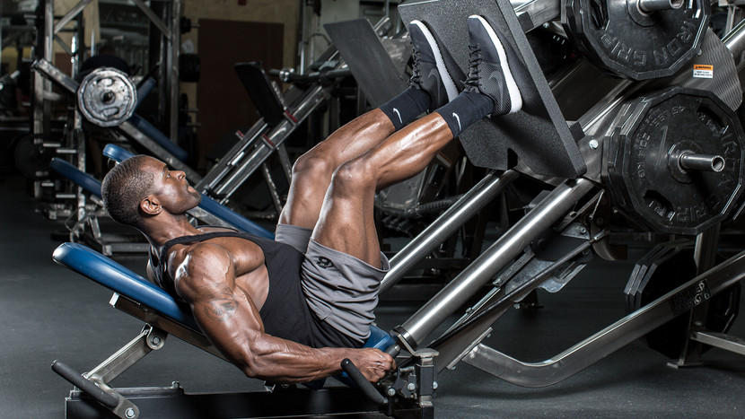
Note:-
- Do as many warm-up reps as you need, but never take them to muscle failure.
- Choose a weight that allows you to reach muscle failure by the target rep listed.
- If you have a spotter, do a few forced reps on your 1-2 heaviest sets of each exercise.
Leg Exercises
These leg exercises promise to work your inner thighs, glutes and hamstrings.
Barbell Squat
- Begin with the barbell supported on top of the traps. The chest should be up and the head facing forward. Adopt a hip-width stance with the feet turned out as needed.
- Descend by flexing the knees, refraining from moving the hips back as much as possible. This requires that the knees travel forward. Ensure that they stay align with the feet. The goal is to keep the torso as upright as possible.
- Continue all the way down, keeping the weight on the front of the heel. At the moment the upper legs contact the lower legs reverse the motion, driving the weight upward.
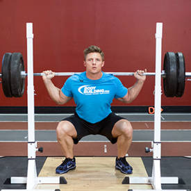
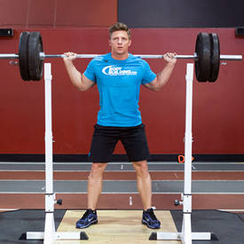
Leg Press
- Using a leg press machine, sit down on the machine and place your legs on the platform directly in front of you at a medium (shoulder width) foot stance. (Note: For the purposes of this discussion we will use the medium stance described above which targets overall development; however you can choose any of the three stances described in the foot positioning section).
- Lower the safety bars holding the weighted platform in place and press the platform all the way up until your legs are fully extended in front of you. Tip: Make sure that you do not lock your knees. Your torso and the legs should make a perfect 90-degree angle. This will be your starting position.
- As you inhale, slowly lower the platform until your upper and lower legs make a 90-degree angle.
- Pushing mainly with the heels of your feet and using the quadriceps go back to the starting position as you exhale.
- Repeat for the recommended amount of repetitions and ensure to lock the safety pins properly once you are done. You do not want that platform falling on you fully loaded.
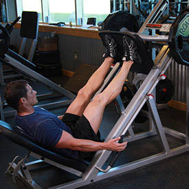
 Caution:
Caution:Always check to make sure that when you re-rack the weight the platform is securely locked.
Dumbbell Walking Lunges
- Begin standing with your feet about hip-width apart and holding dumbbells in your hands down by your side. This will be your starting position.
- Step forward with one leg, flexing the knees to drop your hips. Descend until your rear knee nearly touches the ground. Your posture should remain upright, and your front knee should be in line with your front foot. Do not allow your front knee to go forward beyond your toes as you come down, as this will put undue stress on the knee joint.
- Drive through the heel of your lead foot and extend both knees to raise yourself back up.
- Step forward with your rear foot, repeating the lunge on the opposite leg.
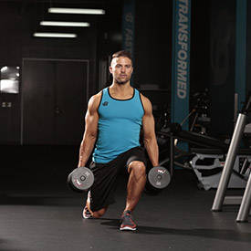
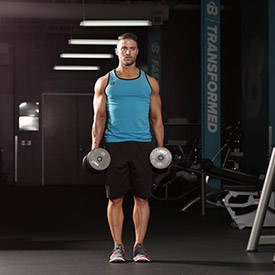
Leg Extension
- For this exercise you will need to use a leg extension machine. First choose your weight and sit on the machine with your legs under the pad (feet pointed forward) and the hands holding the side bars. This will be your starting position. Tip: You will need to adjust the pad so that it falls on top of your lower leg (just above your feet). Also, make sure that your legs form a 90-degree angle between the lower and upper leg. If the angle is less than 90-degrees then that means the knee is over the toes which in turn creates undue stress at the knee joint. If the machine is designed that way, either look for another machine or just make sure that when you start executing the exercise you stop going down once you hit the 90-degree angle.
- Using your quadriceps, extend your legs to the maximum as you exhale. Ensure that the rest of the body remains stationary on the seat. Pause a second on the contracted position.
- Slowly lower the weight back to the original position as you inhale, ensuring that you do not go past the 90-degree angle limit.
- Repeat for the recommended amount of times.
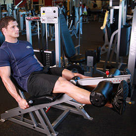
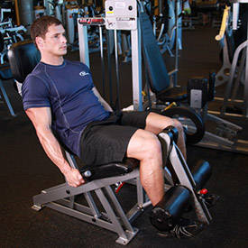
Variations:As mentioned at in the foot positioning section, you can use various foot positions in order to maximize stimulation of certain thigh areas. Also, you can perform the movement unilaterally (one leg at a time).
Romanian Deadlift
- Hold a bar at hip level with a pronated (palms facing down) grip. Your shoulders should be back, your back arched, and your knees slightly bent. This will be your starting position.
- Lower the bar by moving your butt back as far as you can. Keep the bar close to your body, your head looking forward, and your shoulders back. Done correctly, you should reach the maximum range of your hamstring flexibility just below the knee. Any further movement will be compensation and should be avoided for this movement.
- At the bottom of your range of motion, return the starting position by driving the hips forward to stand up tall.
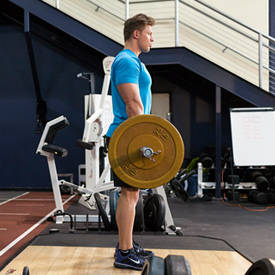
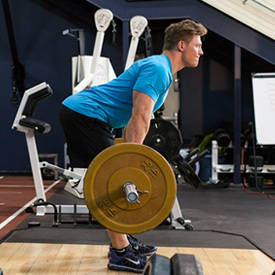
Lying Leg Curls
- Adjust the machine lever to fit your height and lie face down on the leg curl machine with the pad of the lever on the back of your legs (just a few inches under the calves). Tip: Preferably use a leg curl machine that is angled as opposed to flat since an angled position is more favorable for hamstrings recruitment.
- Keeping the torso flat on the bench, ensure your legs are fully stretched and grab the side handles of the machine. Position your toes straight (or you can also use any of the other two stances described on the foot positioning section). This will be your starting position.
- As you exhale, curl your legs up as far as possible without lifting the upper legs from the pad. Once you hit the fully contracted position, hold it for a second.
- As you inhale, bring the legs back to the initial position. Repeat for the recommended amount of repetitions.
Caution:Do not ever use so much weight on the exercise that you start using swinging and jerking as you can risk both lower back injury and also a hamstring injury.
Variation: Since you have three foot positions you have in reality three exercises. The movement can also be performed with a dumbbell held in between your feet (a partner needs to place it properly). This latter exercise though is only suitable for advanced trainees. Finally, it is also possible to just use one leg at a time for better isolation.
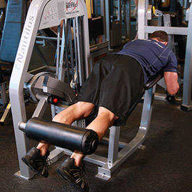
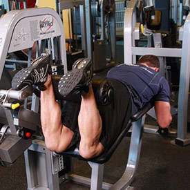
Standing Calf Raises
- Adjust the padded lever of the calf raise machine to fit your height.
- Place your shoulders under the pads provided and position your toes facing forward (or using any of the two other positions described at the beginning of the chapter). The balls of your feet should be secured on top of the calf block with the heels extending off it. Push the lever up by extending your hips and knees until your torso is standing erect. The knees should be kept with a slight bend; never locked. Toes should be facing forward, outwards or inwards as described at the beginning of the chapter. This will be your starting position.
- Raise your heels as you breathe out by extending your ankles as high as possible and flexing your calf. Ensure that the knee is kept stationary at all times. There should be no bending at any time. Hold the contracted position by a second before you start to go back down.
- Go back slowly to the starting position as you breathe in by lowering your heels as you bend the ankles until calves are stretched.
- Repeat for the recommended amount of repetitions.
Caution:If you suffer from lower back problems, a better exercise is the calf press as during a standing calf raise the back has to support the weight being lifted. Also, maintain your back straight and stationary at all times. Rounding of the back can cause lower back injury.
Variation:There are several other ways to perform a standing calf raise. A barbell instead of a machine can be used instead as well as dumbbells, one leg or two legs at a time. Refer to the exercise descriptions of these movements below. A smith machine can be used for calf raises as well.
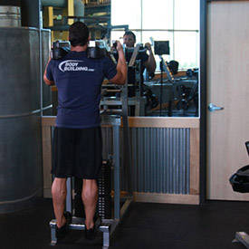
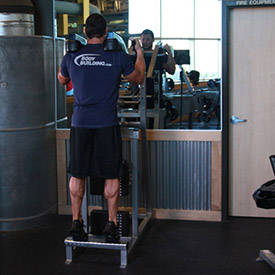